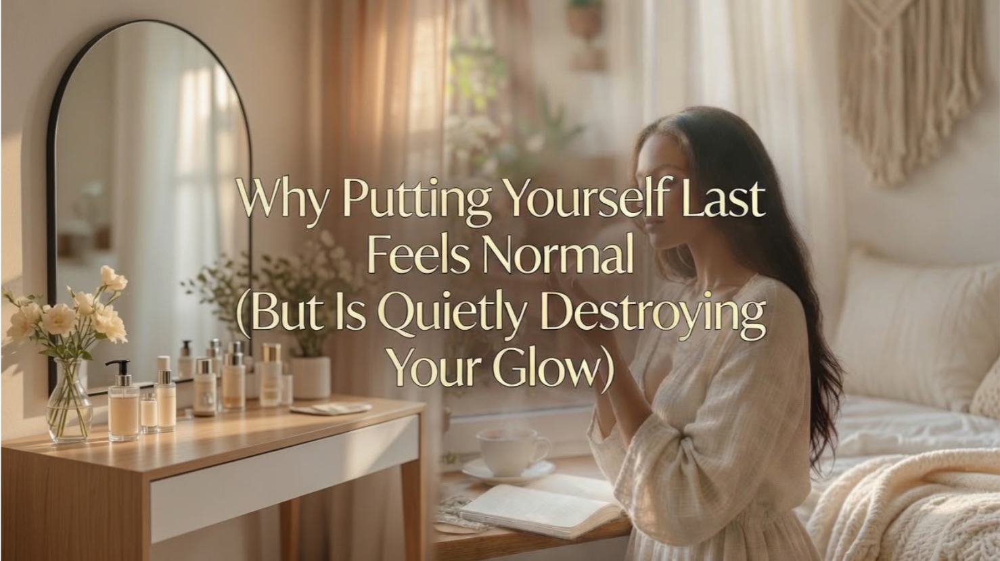

You know that moment.
The day has been a blur of everyone else's needs, making sure they're fed, supported, listened to, loved, and by the time you sit down (if you sit down), your own cup is bone dry. You tell yourself it's just for now. That you'll rest later. That choosing you right now would be selfish.
I've been there. Many times. And if you're reading this, chances are you have too.
Putting ourselves last often doesn't feel like a choice. It feels like the default setting. The "good woman," "devoted mom," "reliable friend," "hard worker" script we've absorbed for years. But here's what I've learned on my own glow journey: this habit isn't noble. It's quietly eroding our energy, our confidence, our joy, and our ability to show up as the radiant women we're meant to be.
You cannot pour from an empty cup. And when that cup stays empty too long, your glow doesn't disappear overnight. It fades one skipped need at a time.
Why It Feels So Normal
From a young age, many of us were praised for being helpful, accommodating, and low-maintenance. We watched the women around us pour out endlessly and rarely refill. Society still celebrates the martyr more than the woman who protects her peace.
Add in perfectionism, fear of disappointing others, or that loud inner critic whispering "Who are you to rest when there's so much to do?" and choosing yourself starts to feel wrong. Almost dangerous.
But the truth is gentler than that voice wants you to believe: You cannot pour from an empty cup. And when that cup stays empty for too long, resentment builds, burnout creeps in, your body sends signals (exhaustion, anxiety, that heavy fog), and your inner glow dims. Healing feels harder. Confidence feels out of reach. The version of you who feels soft, strong, and fully alive gets buried under everyone else's expectations.
I remember nights I'd collapse into bed proud of how much I'd done for others, yet aching because I hadn't done one kind thing for myself. That ache was my signal. It took time, but I started listening.
The Hidden Cost to Your Glow
When we chronically put ourselves last, our nervous system stays in survival mode. Small joys start to feel frivolous. We lose touch with our own desires and needs. And we model for our daughters, or the younger women watching us, that self-sacrifice is the price of love.
This isn't the radiant, abundant life we're here for. Your Glow Era begins when you decide you're worthy of the same care you give so freely to others. No apology needed.
5 Gentle Ways to Start Choosing Yourself Today
You don't need a total life overhaul. Small, honest shifts create powerful change. Here are five that helped me, and still do.
1. Catch the guilt in the moment. Next time you feel that tug, "I should say yes, do more, skip my needs," pause and name it: "This is old guilt talking, not truth." A simple breath and the phrase "I am allowed to choose me" can interrupt the pattern. Over time, it gets quieter.
2. Set one tiny boundary this week. Practice saying a soft but clear "Not today" or "I need a little time." It could be declining an extra commitment or asking for help with dinner. Notice how the world doesn't end, and how your energy shifts when you protect your peace. Boundaries aren't walls; they're doors to your own well-being.
3. Create one non-negotiable "me" ritual. Pick something small that feels nourishing: 10 minutes of quiet tea in the morning, an evening walk, journaling three things you're proud of, or a gentle stretch before bed. Schedule it like you would any important appointment. This isn't extra, it's essential maintenance for your glow.
4. Talk to yourself like a friend. That inner critic? Counter her with kindness. When she says "You don't deserve this," reply: "I've carried a lot. I deserve softness too." Write a short love note to yourself and keep it somewhere visible. Self-love grows in these quiet, repeated moments of compassion.
5. Celebrate the wins, no matter how small. At the end of the day, note one way you chose you, even if it was drinking water before coffee or closing your eyes for five deep breaths. This rewires your brain to see self-care as normal and worthy, not selfish. Progress compounds.
You don't have to earn rest. You don't have to be perfect before you're kind to yourself. You are already worthy, right now, in this messy, beautiful chapter.
This is your permission slip. Your Glow Era isn't waiting for life to slow down or for everyone else to be okay first. It starts with one gentle choice today.
You are not behind. You are not too much. You are simply beginning.
I'd love to hear from you in the comments: Where does "putting yourself last" show up most in your life right now? What's one small way you're ready to choose you this week?
If this resonated, share it with a woman who needs the reminder. And if you're craving more guidance, my book Glow Era was written for exactly this season of becoming.
Here's to softer days, stronger boundaries, and a glow that comes from deep within.
With warmth, Prudence Nteo
Ready to start your glow era?
Grab your copy of Glow Era by Prudence Nteo and begin your own journey back to yourself.
Read the Book